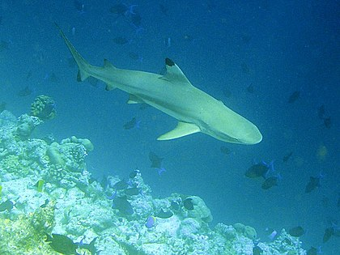

Úvod
Paryby (Chondrichthyes) jsou mořští, vzácně i sladkovodní živočichové, známí zejména v podobě populárních žraloků a rejnoků. Poprvé se objevují již v období siluru v mladších prvohorách.
Jsou to nejen dravci s torpédovitým, nebo shora zploštělým tělem, které mají pokryté plakoidními šupinami. Ústní otvor mají na spodní straně hlavy. Je známo asi 850 druhů, jejich velikost se pohybuje mezi 50 cm až 18 metry.
Vnitřní kostru mají chrupavčitou, jen v neurálních obloucích obratlů jsou stopy kostní tkáně, lebku mají celistvou beze švů. Počet ploutví není stálý, kromě párových prsních a břišních ploutví mají 0–1 řitní, 1–2 hřbetní a ocasní ploutev, která má vždy horní lalok více protažený. Z části břišních ploutví vznikají samčí kopulační orgány, nazývané pterygopody. Oplození je vnitřní, vajíčka se mohou vyvíjet velmi různě. Kromě vejcorodých paryb jsou vejcoživorodé (např. polorejnok kalifornský). Dělí se na žraloky, rejnoky, chiméry. U žraloků je znám nitroděložní kanibalismus, kdy nejsilnější embrya požírají své slabší sourozence.
> Soustavy
Cévní soustava
Je uzavřená a má jen jeden krevní oběh. V srdci je krev neokysličená a v těle smíchaná. Srdce se skládá ze žilního splavu, jedné předsíně, jedné komory a srdečního (tepeního) nástavce. V krvi se nachází zhruba 0,8 % močoviny (osmotická bilance – vyrovnává koncentraci solí z okolního prostředí-mořské vody).
Krycí soustava
Je tvořena kůží, která má 2 položky – pokožku a škáru. Metamorfózou obou těchto položek vzniká plakoidní šupina. Funkce šupin je krycí, ochranná a v ústech působí jako zuby. Žraločí kůže má plakoidní šupiny, tj. ze skloviny a zuboviny, proto jí dříve používali tesaři k obrušování dřeva.
Pohybová soustava
Její funkci vykonává příčně pruhované svalstvo, upíná se na chordu, ploutve a septum horizontale. Příčně pruhované svalstvo je dvojího typu – červené a bílé. V červeném svalstvu převažuje myoglobin, svalstvo pracuje pomalu a je těžko unavitelné. V bílém svalstvu myoglobin téměř není zastoupen, svalstvo pracuje rychle a rychle se unaví.
Dýchací soustava
Spotřebují mnoho kyslíku. Žábry mají 5–7 párů žaberních štěrbin. Pro dýchání je nutný pohyb. Nemají plynový měchýř.
Trávicí soustava
Ostré, zpravidla trojúhelníkovité zuby, po několika řadách. Používána je jen jedna řada. Když se opotřebuje, bezbolestně vypadne a na její místo nastoupí další. Záložní řady postupně přirůstají.
Vnitřní trávicí soustava je poměrně krátká, na ústní dutinu navazuje svalnatý hltan, po něm krátký jícen, žaludek a tenké střevo a nakonec tlusté střevo s takzvanou spirální řasou a kloakou – společné vyústění trávicí, vylučovací a rozmnožovací soustavy. Velká játra s vysokým obsahem jaterního tuku, jejichž váha tvoří asi 10 % celkové váhy tvora a nahrazují funkci plynového měchýře (hydrostatického orgánu).
Vylučovací soustava
Mají dvě pásovitě protáhlé prvoledviny neboli opistonefros. Jako vývod slouží dva primární močovody, které jsou spojeny v močový sinus. Ten má samostatné ústí, které je umístěné za řitním otvorem ústí do kloaky.
Nervová soustava
Je trubicovitá. Dělí se na centrální a periferní, centrální obsahuje mozek a míchu a periferní část zahrnuje nervy po celém těle. Mají velmi vyvinutý mozeček, který slouží k udržování rovnováhy. Prodloužená mícha je také velmi vyvinutá a slouží pro reflexy.
> Smysly
Proudový orgán
Postranní čára, slouží jako hloubkoměr a na měření slanosti a teploty vody.
Sluch
Žraloci mají vnitřní ucho, které je pomocí kanálků vyplněnými vodou propojeno s oběma stranami hlavy. Těmito kanálky proudí voda (jako u člověka vzduch) až k vnitřnímu uchu. Pomocí impulsu vyslaného do mozku získá žralok srozumitelný zvuk. Stejně jako nás naše ucho informuje o poloze, tak i žraloka informuje jeho ucho o poloze ve vodě. Žraloci mají výborný sluch. Slyší až na několik kilometrů. Nejlépe však rozeznávají zvuky do 300 metrů. Dobře také rozlišují tóny o nízké frekvenci a ty ho přitahují. Jsou to zvuky, při kterých někdo bojuje o život – např. šplouchání poraněné ryby, člověk ve vodě. Naopak tóny vyšší frekvence jsou pro něho neslyšitelné.
Zrak
Mají 2 komorové oči. Nemají víčka a oči jsou nehybné, ale poměrně těžko zranitelné. To proto, že si při lovu překrývá oči blankou (mžurkou). V tu chvíli se řídí podle elektrických signálů, které vnímají pomocí lorenziniho ampule.
Čich
Paryby mají vynikající čich schopný ucítit kapku krve až na deset kilometrů.
Chuť
Chuť určuje, zdali je sousto chutné nebo nedobré. Chuťové buňky má žralok umístěny na hřbetě a v ústech. To vysvětluje případy, kdy se žralok o člověka pouze otře nebo si „jen“ ukousne na ochutnání. Horší je, když zjistí, že člověk není lachtan, ale není zas tak špatný, aby ho nesnědl. Naopak, když jim sousto nechutná, může se stát, že ho jednoduše vyplivnou.
Lorenziniho ampule
Nachází se na nose a reaguje na změnu teploty, slanost vody a hloubku. Reagují také na elektrické impulsy. Občas slouží jako kompas v moři.
> Nejznámější paryby
- ostroun obecný
- máčka skvrnitá
- žralok bílý
- žralok obrovský
- kladivoun obecný
- trnucha obecná
- manta obrovská
- chiméra podivná
- chiméra běloskvrnná